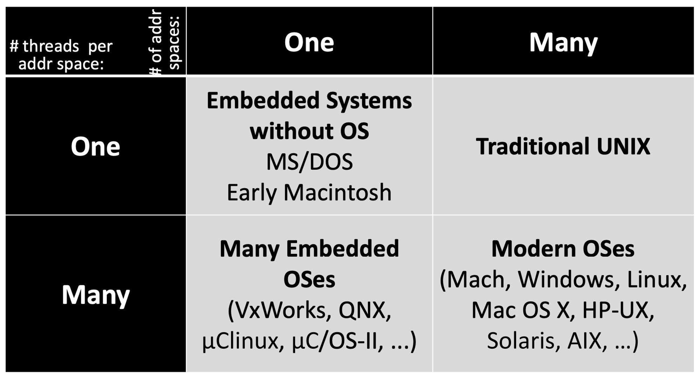
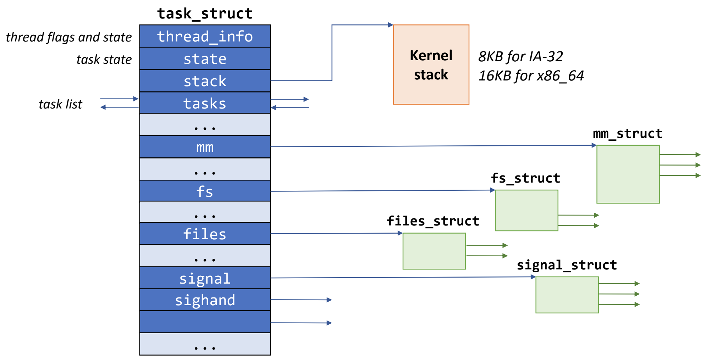
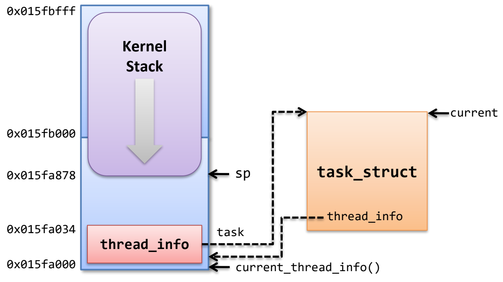

<!DOCTYPE html>
<html><head><title>15. Process, Thread, Task</title><meta charSet="utf-8"/><meta name="viewport" content="width=device-width, initial-scale=1.0"/><meta property="og:title" content="15. Process, Thread, Task"/><meta property="og:description" content="서울대학교 컴퓨터공학과 김진수 교수님의 &amp;quot;고급 운영체제&amp;quot; 강의를 필기한 내용입니다. 다소 잘못된 내용과 구어적 표현 이 포함되어 있을 수 있습니다. Process § 실행중인 프로그램 - instance of a program in execution instance 인 이유는 하나의 process 가 여러 process 를 만들 수 있고 이 각각이 다 별개이기 떄문 Program: 실행 파일, Process: 실행중인 program, Processor: process 를 담당 hw = CPU Process 는 여러 정보를 담고 있음 뭐 cpu register 정보나 pid, state 등 이 정보를 담고 있는 자료구조를 Process Control Block (PCB), process descriptor, (윈도우) task descriptor 라고 한다 Thread § 원래 UNIX 에는 thread 가 없었고, 이후 80년대쯤에 추가되었다 용어 자체는 오래 전부터 사용되었음 - 실행되는 instruction 의 흐름을 “thread of control” 라고 불렀는데 여기서 이름을 가져온 것 원래는 이런 흐름이 process 당 하나밖에 없었지만, 이것을 process 내에 여러개를 두자 기존에는 동시에 여러 일을 해야 할 때에는 fork 를 통해 프로세스를 여러개 만드는 방법을 사용해야 했었지만 근데 이 작업에는 PCB 나 memory 공간 전체를 모두 복사하는 등의 오버헤드들이 크기 때문에 더 가벼운 동시처리가 필요 그래서 thread 가 나온 것 처음에는 default thread 가 있고 pthread 라이브러리 등을 이용해 thread 를 생성해 새로운 흐름을 만들 수 있다 다른 것은 thread 끼리 모두 공유하지만 이것 세개는 분리해서 각자의 context 를 만든다 Thread ID Register 값 Memory 의 stack 영역 장점 동시성 처리 가능 코드도 깔끔해진다 - fork 시절에는 pid 로 parent / child 구분하는 코드가 추가돼야하기때문시 뭐 갖가지 성능이 좋아진다 대표적으로는 IO 로 block 되는 동안 다른 thread 를 실행시켜 다른 처리하는 등 공유하는 공간(대표적으로는 메모리) 이 있기 때문에 서로간의 통신도 용이해진다."/><meta property="og:image" content="https://mdg.haeramk.im/static/og-image.png"/><meta property="og:width" content="1200"/><meta property="og:height" content="675"/><link rel="icon" href="../../static/icon.png"/><meta name="description" content="서울대학교 컴퓨터공학과 김진수 교수님의 &amp;quot;고급 운영체제&amp;quot; 강의를 필기한 내용입니다. 다소 잘못된 내용과 구어적 표현 이 포함되어 있을 수 있습니다. Process § 실행중인 프로그램 - instance of a program in execution instance 인 이유는 하나의 process 가 여러 process 를 만들 수 있고 이 각각이 다 별개이기 떄문 Program: 실행 파일, Process: 실행중인 program, Processor: process 를 담당 hw = CPU Process 는 여러 정보를 담고 있음 뭐 cpu register 정보나 pid, state 등 이 정보를 담고 있는 자료구조를 Process Control Block (PCB), process descriptor, (윈도우) task descriptor 라고 한다 Thread § 원래 UNIX 에는 thread 가 없었고, 이후 80년대쯤에 추가되었다 용어 자체는 오래 전부터 사용되었음 - 실행되는 instruction 의 흐름을 “thread of control” 라고 불렀는데 여기서 이름을 가져온 것 원래는 이런 흐름이 process 당 하나밖에 없었지만, 이것을 process 내에 여러개를 두자 기존에는 동시에 여러 일을 해야 할 때에는 fork 를 통해 프로세스를 여러개 만드는 방법을 사용해야 했었지만 근데 이 작업에는 PCB 나 memory 공간 전체를 모두 복사하는 등의 오버헤드들이 크기 때문에 더 가벼운 동시처리가 필요 그래서 thread 가 나온 것 처음에는 default thread 가 있고 pthread 라이브러리 등을 이용해 thread 를 생성해 새로운 흐름을 만들 수 있다 다른 것은 thread 끼리 모두 공유하지만 이것 세개는 분리해서 각자의 context 를 만든다 Thread ID Register 값 Memory 의 stack 영역 장점 동시성 처리 가능 코드도 깔끔해진다 - fork 시절에는 pid 로 parent / child 구분하는 코드가 추가돼야하기때문시 뭐 갖가지 성능이 좋아진다 대표적으로는 IO 로 block 되는 동안 다른 thread 를 실행시켜 다른 처리하는 등 공유하는 공간(대표적으로는 메모리) 이 있기 때문에 서로간의 통신도 용이해진다."/><meta name="generator" content="Quartz"/><link rel="preconnect" href="https://fonts.googleapis.com"/><link rel="preconnect" href="https://fonts.gstatic.com"/><link href="../../index.css" rel="stylesheet" type="text/css" spa-preserve/><link href="https://cdn.jsdelivr.net/npm/katex@0.16.0/dist/katex.min.css" rel="stylesheet" type="text/css" spa-preserve/><link href="https://fonts.googleapis.com/css2?family=IBM Plex Mono&amp;family=Gowun Batang:wght@400;700&amp;family=Gowun Dodum:ital,wght@0,400;0,600;1,400;1,600&amp;display=swap" rel="stylesheet" type="text/css" spa-preserve/><script src="../../prescript.js" type="application/javascript" spa-preserve></script><script type="application/javascript" spa-preserve>const fetchData = fetch(`../../static/contentIndex.json`).then(data => data.json())</script></head><body data-slug="originals/aos.spring.2024.cse.snu.ac.kr/15.-Process,-Thread,-Task"><div id="quartz-root" class="page"><div id="quartz-body"><div class="left sidebar"><h1 class="page-title "><a href="../..">Madison Digital Garden</a></h1><div class="spacer mobile-only"></div><div class="search "><div id="search-icon"><p>Search</p><div></div><svg tabIndex="0" aria-labelledby="title desc" role="img" xmlns="http://www.w3.org/2000/svg" viewBox="0 0 19.9 19.7"><title id="title">Search</title><desc id="desc">Search</desc><g class="search-path" fill="none"><path stroke-linecap="square" d="M18.5 18.3l-5.4-5.4"></path><circle cx="8" cy="8" r="7"></circle></g></svg></div><div id="search-container"><div id="search-space"><input autocomplete="off" id="search-bar" name="search" type="text" aria-label="Search for something" placeholder="Search for something"/><div id="results-container"></div></div></div></div><div class="darkmode "><input class="toggle" id="darkmode-toggle" type="checkbox" tabIndex="-1"/><label id="toggle-label-light" for="darkmode-toggle" tabIndex="-1"><svg xmlns="http://www.w3.org/2000/svg" xmlnsXlink="http://www.w3.org/1999/xlink" version="1.1" id="dayIcon" x="0px" y="0px" viewBox="0 0 35 35" style="enable-background:new 0 0 35 35;" xmlSpace="preserve"><title>Light mode</title><path d="M6,17.5C6,16.672,5.328,16,4.5,16h-3C0.672,16,0,16.672,0,17.5    S0.672,19,1.5,19h3C5.328,19,6,18.328,6,17.5z M7.5,26c-0.414,0-0.789,0.168-1.061,0.439l-2,2C4.168,28.711,4,29.086,4,29.5    C4,30.328,4.671,31,5.5,31c0.414,0,0.789-0.168,1.06-0.44l2-2C8.832,28.289,9,27.914,9,27.5C9,26.672,8.329,26,7.5,26z M17.5,6    C18.329,6,19,5.328,19,4.5v-3C19,0.672,18.329,0,17.5,0S16,0.672,16,1.5v3C16,5.328,16.671,6,17.5,6z M27.5,9    c0.414,0,0.789-0.168,1.06-0.439l2-2C30.832,6.289,31,5.914,31,5.5C31,4.672,30.329,4,29.5,4c-0.414,0-0.789,0.168-1.061,0.44    l-2,2C26.168,6.711,26,7.086,26,7.5C26,8.328,26.671,9,27.5,9z M6.439,8.561C6.711,8.832,7.086,9,7.5,9C8.328,9,9,8.328,9,7.5    c0-0.414-0.168-0.789-0.439-1.061l-2-2C6.289,4.168,5.914,4,5.5,4C4.672,4,4,4.672,4,5.5c0,0.414,0.168,0.789,0.439,1.06    L6.439,8.561z M33.5,16h-3c-0.828,0-1.5,0.672-1.5,1.5s0.672,1.5,1.5,1.5h3c0.828,0,1.5-0.672,1.5-1.5S34.328,16,33.5,16z     M28.561,26.439C28.289,26.168,27.914,26,27.5,26c-0.828,0-1.5,0.672-1.5,1.5c0,0.414,0.168,0.789,0.439,1.06l2,2    C28.711,30.832,29.086,31,29.5,31c0.828,0,1.5-0.672,1.5-1.5c0-0.414-0.168-0.789-0.439-1.061L28.561,26.439z M17.5,29    c-0.829,0-1.5,0.672-1.5,1.5v3c0,0.828,0.671,1.5,1.5,1.5s1.5-0.672,1.5-1.5v-3C19,29.672,18.329,29,17.5,29z M17.5,7    C11.71,7,7,11.71,7,17.5S11.71,28,17.5,28S28,23.29,28,17.5S23.29,7,17.5,7z M17.5,25c-4.136,0-7.5-3.364-7.5-7.5    c0-4.136,3.364-7.5,7.5-7.5c4.136,0,7.5,3.364,7.5,7.5C25,21.636,21.636,25,17.5,25z"></path></svg></label><label id="toggle-label-dark" for="darkmode-toggle" tabIndex="-1"><svg xmlns="http://www.w3.org/2000/svg" xmlnsXlink="http://www.w3.org/1999/xlink" version="1.1" id="nightIcon" x="0px" y="0px" viewBox="0 0 100 100" style="enable-background='new 0 0 100 100'" xmlSpace="preserve"><title>Dark mode</title><path d="M96.76,66.458c-0.853-0.852-2.15-1.064-3.23-0.534c-6.063,2.991-12.858,4.571-19.655,4.571  C62.022,70.495,50.88,65.88,42.5,57.5C29.043,44.043,25.658,23.536,34.076,6.47c0.532-1.08,0.318-2.379-0.534-3.23  c-0.851-0.852-2.15-1.064-3.23-0.534c-4.918,2.427-9.375,5.619-13.246,9.491c-9.447,9.447-14.65,22.008-14.65,35.369  c0,13.36,5.203,25.921,14.65,35.368s22.008,14.65,35.368,14.65c13.361,0,25.921-5.203,35.369-14.65  c3.872-3.871,7.064-8.328,9.491-13.246C97.826,68.608,97.611,67.309,96.76,66.458z"></path></svg></label></div></div><div class="center"><div class="page-header"><div class="popover-hint"><h1 class="article-title ">15. Process, Thread, Task</h1><p class="content-meta ">Apr 30, 2024, 14 min read</p><ul class="tags "><li><a href="../../tags/강의록" class="internal tag-link">#강의록</a></li><li><a href="../../tags/snu_cse_ms_aos24s" class="internal tag-link">#snu_cse_ms_aos24s</a></li><li><a href="../../tags/draft" class="internal tag-link">#draft</a></li></ul></div></div><article class="popover-hint"><blockquote class="callout" data-callout="info">
<div class="callout-title">
                  <div class="callout-icon"><svg xmlns="http://www.w3.org/2000/svg" width="100%" height="100%" viewBox="0 0 24 24" fill="none" stroke="currentColor" stroke-width="2" stroke-linecap="round" stroke-linejoin="round"><circle cx="12" cy="12" r="10"></circle><line x1="12" y1="16" x2="12" y2="12"></line><line x1="12" y1="8" x2="12.01" y2="8"></line></svg></div>
                  <div class="callout-title-inner"><p>서울대학교 컴퓨터공학과 김진수 교수님의 &quot;고급 운영체제&quot; 강의를 필기한 내용입니다. </p></div>
                  
                </div>
</blockquote>
<blockquote class="callout" data-callout="warning">
<div class="callout-title">
                  <div class="callout-icon"><svg xmlns="http://www.w3.org/2000/svg" width="100%" height="100%" viewBox="0 0 24 24" fill="none" stroke="currentColor" stroke-width="2" stroke-linecap="round" stroke-linejoin="round"><path d="m21.73 18-8-14a2 2 0 0 0-3.48 0l-8 14A2 2 0 0 0 4 21h16a2 2 0 0 0 1.73-3Z"></path><line x1="12" y1="9" x2="12" y2="13"></line><line x1="12" y1="17" x2="12.01" y2="17"></line></svg></div>
                  <div class="callout-title-inner"><p>다소 잘못된 내용과 구어적 표현 이 포함되어 있을 수 있습니다. </p></div>
                  
                </div>
</blockquote>
<h2 id="process">Process<a aria-hidden="true" tabindex="-1" href="#process" class="internal"> §</a></h2>
<ul>
<li>실행중인 프로그램 - instance of a program in execution
<ul>
<li>instance 인 이유는 하나의 process 가 여러 process 를 만들 수 있고 이 각각이 다 별개이기 떄문</li>
</ul>
</li>
<li>Program: 실행 파일, Process: 실행중인 program, Processor: process 를 담당 hw = CPU</li>
<li>Process 는 여러 정보를 담고 있음
<ul>
<li>뭐 cpu register 정보나 pid, state 등</li>
</ul>
</li>
<li>이 정보를 담고 있는 자료구조를 <em>Process Control Block</em> (<em>PCB</em>), process descriptor, (윈도우) task descriptor 라고 한다</li>
</ul>
<h2 id="thread">Thread<a aria-hidden="true" tabindex="-1" href="#thread" class="internal"> §</a></h2>
<ul>
<li>원래 UNIX 에는 thread 가 없었고, 이후 80년대쯤에 추가되었다</li>
<li>용어 자체는 오래 전부터 사용되었음 - 실행되는 instruction 의 흐름을 “thread of control” 라고 불렀는데 여기서 이름을 가져온 것</li>
<li>원래는 이런 흐름이 process 당 하나밖에 없었지만, 이것을 process 내에 여러개를 두자</li>
<li>기존에는 동시에 여러 일을 해야 할 때에는 <code>fork</code> 를 통해 프로세스를 여러개 만드는 방법을 사용해야 했었지만</li>
<li>근데 이 작업에는 PCB 나 memory 공간 전체를 모두 복사하는 등의 오버헤드들이 크기 때문에 더 가벼운 동시처리가 필요</li>
<li>그래서 thread 가 나온 것</li>
<li>처음에는 default thread 가 있고 <code>pthread</code> 라이브러리 등을 이용해 thread 를 생성해 새로운 흐름을 만들 수 있다</li>
<li>다른 것은 thread 끼리 모두 공유하지만 이것 세개는 분리해서 각자의 context 를 만든다
<ul>
<li>Thread ID</li>
<li>Register 값</li>
<li>Memory 의 stack 영역</li>
</ul>
</li>
<li>장점
<ul>
<li>동시성 처리 가능</li>
<li>코드도 깔끔해진다 - <code>fork</code> 시절에는 pid 로 parent / child 구분하는 코드가 추가돼야하기때문시</li>
<li>뭐 갖가지 성능이 좋아진다
<ul>
<li>대표적으로는 IO 로 block 되는 동안 다른 thread 를 실행시켜 다른 처리하는 등</li>
</ul>
</li>
<li>공유하는 공간(대표적으로는 메모리) 이 있기 때문에 서로간의 통신도 용이해진다.
<ul>
<li><code>fork</code> 시절에는 IPC 사용</li>
<li>물론 이건 알다시피 양날의 검이다? 아니 모르는데?</li>
</ul>
</li>
<li>Multi-core 환경에서 사용하기에도 용이띠
<ul>
<li>Parallel programming 을 구현하는 방법은 결국에는 fork 아니면 thread 다</li>
<li><a href="https://www.openmp.org/" class="external">OpenMP</a> 도 결국에는 thread 로 작동한다.</li>
</ul>
</li>
</ul>
</li>
<li>이 비유 좋다 - Process 는 집이고 thread 는 그 안에서 돌아댕기는 사람과 유사하다.
<ul>
<li>집이라는 공유 공간에서 사람들이 각자의 문맥을 가지며 작업을 함</li>
</ul>
</li>
<li>Code, data, heap 은 처음에 exec 할 때 메모리로 올라가고
<ul>
<li>Thread 간에는 이것들을 공유</li>
<li>Thread 를 생성하면 그때마다 stack 을 메모리에 새로 생성</li>
</ul>
</li>
</ul>
<p></p>
<ul>
<li>즉, 위처럼 된다
<ul>
<li><em>Program Counter</em> (<em>PC</em>) 는 모든 thread 가 공유된 code 를 향하고 있고</li>
<li><em>Stack Pointer</em> (<em>SP</em>) 는 thread 각각 다른 stack 을 참조하는</li>
</ul>
</li>
</ul>
<p></p>
<ul>
<li>가로는 몇개의 process 가 동시에 존재할 수 있나
<ul>
<li>왼쪽위의 경우에는 fork 라는 개념 없이 그냥 프로세스 하나만 존재</li>
<li>오른쪽위의 경우에는 fork 로 프로세스 생성 가능 - 물론 core 가 하나여서 running 중인 것은 하나일 수는 있지만 어쨋든</li>
</ul>
</li>
<li>세로는 몇개의 thread 가 동시에 존재할 수 있나
<ul>
<li>왼쪽아래의 경우에는 embedded os 에서 최대한 가볍게 하기 위해 1개의 프로세스만 사용하고 여기에 thread 를 여러개 생성하는 방법을 사용한다고 한다</li>
</ul>
</li>
</ul>
<h2 id="linux-task">Linux Task<a aria-hidden="true" tabindex="-1" href="#linux-task" class="internal"> §</a></h2>
<ul>
<li>Process 와 thread 를 합쳐서 부르는 개념</li>
<li>이것은 linux 가 제대로 된 thread 를 제공하지 않기 때문</li>
<li>정석적으로는, Kernel level thread 의 경우에는 syscall 로 thread 를 생성해 kernel 이 알고 있음
<ul>
<li>이 경우에는 process 를 위한 정보와 thread 를 위한 정보를 저장할 공간이 모두 필요</li>
<li>즉, PCB 에 추가적으로 <em>Thread Control Block</em> (<em>TCB</em>) 같은게 필요</li>
<li>그리고 각 TCB 는 PCB 에 linked ilst 같은것으로 묶여서 process 안에 thread 가 속해있다는 것을 계층적으로 나타내면 베스트이다.</li>
</ul>
</li>
<li>하지만 linux 는 이렇게 구현되지 않았다.
<ul>
<li><a href="https://github.com/torvalds" class="external">시발즈씨</a>는 linux 에 PCB 와 유사한 목적으로 <code>task_struct</code> 를 구현해 놓았다.</li>
<li>그리고 이놈으로 thread 까지 구현해 버리는데..</li>
</ul>
</li>
</ul>
<h3 id="task_struct"><code>task_struct</code><a aria-hidden="true" tabindex="-1" href="#task_struct" class="internal"> §</a></h3>
<ul>
<li><a href="https://github.com/torvalds/linux/blob/master/include/linux/sched.h#L748-L1572" class="external">Linux 의 sched.h 코드에 선언되어 있는 task_struct</a></li>
</ul>
<p></p>
<ul>
<li>위 그림이 <code>task_struct</code> 의 대략적인 구조인데
<ul>
<li>보면 <code>task_struct</code> 는 대부분의 field 들이 pointer 로 되어 있어 여기의 field 가 다른 자료구조를 가리키게 되어 있다.</li>
<li>Process 를 fork 를 할 때에는 <code>task_struct</code> 를 새로 만들고, 여기에 딸려 있는 다른 자료 구조도 전부 새로 만든 다음 내용을 copy 하는 식으로 진행된다.</li>
<li>Thread 를 만들 때에는 마찬가지로 <code>task_struct</code> 를 새로 하나 만들되 여기에 딸려 있는 것들을 새로 만들지 않고 pointer 로 기존의 것을 가리키게만 구현한다.</li>
<li>따라서 fork 와 threading 모두 <code>clone</code> syscall 하나로 처리한다고 하네
<ul>
<li><a href="../.././../tags/draft" class="tag-link internal" data-slug="tags/draft">#draft</a> 더블체크 필요</li>
</ul>
</li>
</ul>
</li>
<li><code>task_struct</code> 의 몇가지 필드를 봐보자.
<ul>
<li><code>thread_info</code> 는 process 인지 thread 인지 구분하는 flag 및 그 외 여러 상태값들이 저장된다.</li>
<li><code>tasks</code> 는 다른 <code>task_struct</code> 를 가리키는 포인터로, 모든 <code>task_struct</code> 는 circular doubly-linked list 로 연결되어 있다고 한다.</li>
</ul>
</li>
<li><code>task_struct</code> 는 자주 사용되기도 하고 크기가 고정되어 있어 미리 mem 공간에 확보해 놨다가 요청하면 바로바로 주게 하는 방법을 사용한다 - 이것은 <em>Slab Allocator</em> 라고 한다.
<ul>
<li><code>/proc/slabinfo</code> 에 보면 몇개가 만들어져 있고 몇개가 남았는지 등의 정보가 뜬다</li>
<li>뭐 참고로 <code>task_struct</code> 이외에도 자주사용되지 않는 struct 도 pool 을 만들어 관리한다고 한다.</li>
</ul>
</li>
</ul>
<h3 id="현재-task-위치-찾기">현재 task 위치 찾기<a aria-hidden="true" tabindex="-1" href="#현재-task-위치-찾기" class="internal"> §</a></h3>
<ul>
<li>현재의 task 를 찾는 방법은 CPU arch 에 따라 다르며, 현재 x86 의 경우에는 그냥 단순하게 <code>current_task</code> 라는 per-CPU variable 을 사용한다고 한다.
<ul>
<li>이 <code>current_task</code> 변수는 <code>get_current()</code> 매크로로 가져올 수 있다.</li>
<li>syscall 나 exception 이 걸리면 지금 실행중인 task 가 걸었을 것이므로 이 값은 유효한 값으로서 사용할 수 있지만,</li>
<li>하지만 interrupt 가 걸렸을 때의 interrupt handler 는 task 가 아니기 때문에 current 가 invalid 하다 - 이 값은 (scheduler 를 제외하고는) 사용되어서는 안된다고 한다.</li>
</ul>
</li>
<li>그 이전에는 아래와 같았다고 함.</li>
</ul>
<p></p>
<ul>
<li>Kernel stack 은 32bit 시절에는 8KB, 64bit 에서는 16KB (4 페이지 크기) 사이즈 크기를 가진다고 한다.
<ul>
<li>두배가 된 이유는 pointer addr 크기가 두배가 되었으니까</li>
</ul>
</li>
<li>이 kernel stack 의 아래에 <code>thread_info</code> 를 저장하게 된다.
<ul>
<li>Kernel stack 은 상위 주소에서 하위 주소로 자라기 때문에</li>
<li><code>thread_info</code> 는 최하단 주소의, kernel stack 공간 최상단에 있게 된다.</li>
<li>kernel stack pointer (SP) 의 하위 12bit 를 지우면 <code>thread_info</code> 가 나오게 된다.</li>
<li>그리고 여기에 들어가면 thread 에 대한 task struct 로 이동할 수 있게 포인터로 연결된다.</li>
</ul>
</li>
</ul>
<h3 id="creating-task_struct">Creating <code>task_struct</code><a aria-hidden="true" tabindex="-1" href="#creating-task_struct" class="internal"> §</a></h3>
<h4 id="process-task_struct">Process <code>task_struct</code><a aria-hidden="true" tabindex="-1" href="#process-task_struct" class="internal"> §</a></h4>
<ol>
<li><code>sys_fork()</code> -> <code>_do_fork()</code> 가 호출</li>
<li>여기서는 우선 <code>copy_process()</code> 가 호출되는데 그 안에서
<ol>
<li><code>dup_task_struct()</code> 로 kernel stack 을 만들고 <code>task_struct</code> 를 하나 할당받는다.</li>
<li><code>sched_fork()</code>: Scheduler 관련 자료구조 초기화</li>
<li><code>copy_files()</code>, <code>copy_fs()</code>, <code>copy_sighand()</code>, <code>copy_signam()</code>, <code>copy_mm()</code>, <code>copy_thread_tls()</code>: 여러 자료구조들 값 복사</li>
<li><code>alloc_pid()</code>: PID 할당</li>
<li><code>attach_pid()</code>: parent 의 PID hash table 에 child PID 를 집어넣는다</li>
</ol>
</li>
<li><code>wake_up_new_task()</code> -> <code>activate_task()</code> 를 해서 runqueue 에 넣는다.</li>
</ol>
<h4 id="thread-task_struct">Thread <code>task_struct</code><a aria-hidden="true" tabindex="-1" href="#thread-task_struct" class="internal"> §</a></h4>
<ul>
<li>Thread 를 새로 생성할 때에는
<ul>
<li>마찬가지로 task struct 를 새로 만드는데</li>
<li>값들을 복사하는 것이 아닌 shallow copy 로 주소만 복사해온다</li>
</ul>
</li>
<li>Thread 를 새로 생성하는 syscall 은 <code>clone()</code> 으로, 여기에 <code>flags</code> arg 로 어떤 값들을 share 할 지 명시하게 됨</li>
</ul>
<h3 id="linux-task-의-posix-호환성">Linux task 의 POSIX 호환성…<a aria-hidden="true" tabindex="-1" href="#linux-task-의-posix-호환성" class="internal"> §</a></h3>
<ul>
<li><em>POSIX</em> (<em>Portable Operating System Interface</em>) 는 OS 표준 인터페이스 인데</li>
<li>POSIX 에서는 thread 에 대해 share 하지 말아야 할 것들만 정의하고 나머지는 모두 share 한다로 정의</li>
<li>근데 Linux thread 에서는 반대로 share 할 것들만 정의하고 나머지는 전부 share 하지 않는다는 식으로 정의해 놓았다.</li>
<li>이것이 딱 맞아 떨어지면 좋지만 아쉽게도 그렇지 않았다..
<ul>
<li>가령 이전의 linux thread 에서는 pid 가 thread 마다 각기 달랐다고 한다.</li>
</ul>
</li>
<li>이 호환성을 위해 IBM 에서는 갈아없는 선택을, redhat 은 최소한의 변경만 하기로 하고 개발에 나섰으나,, 결론적으로는 readhat 이 이김</li>
</ul>
<h3 id="thread-group">Thread Group<a aria-hidden="true" tabindex="-1" href="#thread-group" class="internal"> §</a></h3>
<ul>
<li>하나의 process 에 속하는 thread 들을 linux 에서는 <em>Thread Group</em> 이라고 지칭하며 process 전체에 대한 syscall 이 왔을 때 동일하게 처리한다.</li>
<li>대충 이런식이다.
<ul>
<li>Thread 의 <code>task_struct</code> 들을 thread group 으로 묶고 이 안의 leader 를 정한다.</li>
<li>그리고 <code>get_pid()</code> syscall 이 왔다고 해보자.</li>
<li>그럼 이 leader 의 PID 를 반환하는 식으로 thread group 내의 모든 thread 들이 동일한 응답을 하게 된다.</li>
</ul>
</li>
<li>우선적으로는 제일 먼저 생성된 <code>task_struct</code> 가 leader 가 되며,
<ul>
<li>Leader 가 죽으면 딴 leader 를 새로 뽑고</li>
<li><code>exec()</code> syscall 에 대해서는 이 leader 만 제외하고 전부 삭제한 뒤에 leader 에서 <code>exec()</code> 의 인자로 들어온 프로그램이 실행되도록 한다.</li>
</ul>
</li>
</ul>
<h2 id="one-to-one-many-to-one">One-to-one, Many-to-one<a aria-hidden="true" tabindex="-1" href="#one-to-one-many-to-one" class="internal"> §</a></h2>
<blockquote class="callout" data-callout="tip">
<div class="callout-title">
                  <div class="callout-icon"><svg xmlns="http://www.w3.org/2000/svg" width="100%" height="100%" viewBox="0 0 24 24" fill="none" stroke="currentColor" stroke-width="2" stroke-linecap="round" stroke-linejoin="round"><path d="M8.5 14.5A2.5 2.5 0 0 0 11 12c0-1.38-.5-2-1-3-1.072-2.143-.224-4.054 2-6 .5 2.5 2 4.9 4 6.5 2 1.6 3 3.5 3 5.5a7 7 0 1 1-14 0c0-1.153.433-2.294 1-3a2.5 2.5 0 0 0 2.5 2.5z"></path></svg></div>
                  <div class="callout-title-inner"><p>여기 내용에 대해서는 <a href="../../originals/aos.spring.2024.cse.snu.ac.kr/17.-Scheduler-Activation" class="internal" data-slug="originals/aos.spring.2024.cse.snu.ac.kr/17.-Scheduler-Activation">17. Scheduler Activation</a> 강의록을 좀 더 참고하자.</p></div>
                  
                </div>
</blockquote>
<ul>
<li>User level thread 와 kernel level thread 가 1:1 로 매핑된다는 것인데</li>
<li>Process 의 경우에 kernel 에 exec context 를 만들고 이것을 user level 로 올려서 실행하다가 syscall 하면 다시 kernel level 로 들어오는 흐름을 가진다.
<ul>
<li>즉, kernel context 와 이에 대응되는 user context 가 있게 되는 것.</li>
</ul>
</li>
<li>Thread 에서도 이와 동일하게 하자는 아이디어인 셈.
<ul>
<li>User level thread 를 생성할 때, <code>clone()</code> syscall 을 호출해 user level thread 에 대응되는 kernel level thread 를 생성하도록 kernel 에 알린다.</li>
</ul>
</li>
<li>근데 이것이 너무 낭비이기 때문에 1:1 아닌 더 적은 갯수의 kernel level thread 를 맹글어 user level thread 에 대응되도록 하자는 <em>Many-to-one</em> 아이디어도 있었다.
<ul>
<li>만들어 놓은 thread 는 많지만 실제로 동시에 작동되는 thread 는 그보다는 적다는 것에 착안한 것.</li>
<li>근데 구현은 힘들다고 한다 - IBM 이 이것을 구현하지 못해 실패한 것</li>
</ul>
</li>
</ul>
<h2 id="kernel-thread">Kernel Thread<a aria-hidden="true" tabindex="-1" href="#kernel-thread" class="internal"> §</a></h2>
<ul>
<li>나도 안다. 이 문맥에서 kernel thread 라고 해버리면 kernel level thread 를 의미하는 것처럼 보인다는 것.</li>
<li><em>Kernel thread</em> 는 kernel process 가 필요로 하는 thread 를 의미하고,</li>
<li><code>kthread_create()</code> 로 생성한다.</li>
</ul></article></div><div class="right sidebar"><div class="graph "><h3>Graph View</h3><div class="graph-outer"><div id="graph-container" data-cfg="{&quot;drag&quot;:true,&quot;zoom&quot;:true,&quot;depth&quot;:1,&quot;scale&quot;:1.1,&quot;repelForce&quot;:0.5,&quot;centerForce&quot;:0.3,&quot;linkDistance&quot;:30,&quot;fontSize&quot;:0.6,&quot;opacityScale&quot;:1,&quot;showTags&quot;:true,&quot;removeTags&quot;:[]}"></div><svg version="1.1" id="global-graph-icon" xmlns="http://www.w3.org/2000/svg" xmlnsXlink="http://www.w3.org/1999/xlink" x="0px" y="0px" viewBox="0 0 55 55" fill="currentColor" xmlSpace="preserve"><path d="M49,0c-3.309,0-6,2.691-6,6c0,1.035,0.263,2.009,0.726,2.86l-9.829,9.829C32.542,17.634,30.846,17,29,17
	s-3.542,0.634-4.898,1.688l-7.669-7.669C16.785,10.424,17,9.74,17,9c0-2.206-1.794-4-4-4S9,6.794,9,9s1.794,4,4,4
	c0.74,0,1.424-0.215,2.019-0.567l7.669,7.669C21.634,21.458,21,23.154,21,25s0.634,3.542,1.688,4.897L10.024,42.562
	C8.958,41.595,7.549,41,6,41c-3.309,0-6,2.691-6,6s2.691,6,6,6s6-2.691,6-6c0-1.035-0.263-2.009-0.726-2.86l12.829-12.829
	c1.106,0.86,2.44,1.436,3.898,1.619v10.16c-2.833,0.478-5,2.942-5,5.91c0,3.309,2.691,6,6,6s6-2.691,6-6c0-2.967-2.167-5.431-5-5.91
	v-10.16c1.458-0.183,2.792-0.759,3.898-1.619l7.669,7.669C41.215,39.576,41,40.26,41,41c0,2.206,1.794,4,4,4s4-1.794,4-4
	s-1.794-4-4-4c-0.74,0-1.424,0.215-2.019,0.567l-7.669-7.669C36.366,28.542,37,26.846,37,25s-0.634-3.542-1.688-4.897l9.665-9.665
	C46.042,11.405,47.451,12,49,12c3.309,0,6-2.691,6-6S52.309,0,49,0z M11,9c0-1.103,0.897-2,2-2s2,0.897,2,2s-0.897,2-2,2
	S11,10.103,11,9z M6,51c-2.206,0-4-1.794-4-4s1.794-4,4-4s4,1.794,4,4S8.206,51,6,51z M33,49c0,2.206-1.794,4-4,4s-4-1.794-4-4
	s1.794-4,4-4S33,46.794,33,49z M29,31c-3.309,0-6-2.691-6-6s2.691-6,6-6s6,2.691,6,6S32.309,31,29,31z M47,41c0,1.103-0.897,2-2,2
	s-2-0.897-2-2s0.897-2,2-2S47,39.897,47,41z M49,10c-2.206,0-4-1.794-4-4s1.794-4,4-4s4,1.794,4,4S51.206,10,49,10z"></path></svg></div><div id="global-graph-outer"><div id="global-graph-container" data-cfg="{&quot;drag&quot;:true,&quot;zoom&quot;:true,&quot;depth&quot;:-1,&quot;scale&quot;:0.9,&quot;repelForce&quot;:0.5,&quot;centerForce&quot;:0.3,&quot;linkDistance&quot;:30,&quot;fontSize&quot;:0.6,&quot;opacityScale&quot;:1,&quot;showTags&quot;:true,&quot;removeTags&quot;:[]}"></div></div></div><div class="toc desktop-only"><button type="button" id="toc"><h3>Table of Contents</h3><svg xmlns="http://www.w3.org/2000/svg" width="24" height="24" viewBox="0 0 24 24" fill="none" stroke="currentColor" stroke-width="2" stroke-linecap="round" stroke-linejoin="round" class="fold"><polyline points="6 9 12 15 18 9"></polyline></svg></button><div id="toc-content"><ul class="overflow"><li class="depth-0"><a href="#process" data-for="process">Process</a></li><li class="depth-0"><a href="#thread" data-for="thread">Thread</a></li><li class="depth-0"><a href="#linux-task" data-for="linux-task">Linux Task</a></li><li class="depth-1"><a href="#task_struct" data-for="task_struct">task_struct</a></li><li class="depth-1"><a href="#현재-task-위치-찾기" data-for="현재-task-위치-찾기">현재 task 위치 찾기</a></li><li class="depth-1"><a href="#creating-task_struct" data-for="creating-task_struct">Creating task_struct</a></li><li class="depth-1"><a href="#linux-task-의-posix-호환성" data-for="linux-task-의-posix-호환성">Linux task 의 POSIX 호환성...</a></li><li class="depth-1"><a href="#thread-group" data-for="thread-group">Thread Group</a></li><li class="depth-0"><a href="#one-to-one-many-to-one" data-for="one-to-one-many-to-one">One-to-one, Many-to-one</a></li><li class="depth-0"><a href="#kernel-thread" data-for="kernel-thread">Kernel Thread</a></li></ul></div></div><div class="backlinks "><h3>Backlinks</h3><ul class="overflow"><li><a href="../../originals/aos.spring.2024.cse.snu.ac.kr/(서울대)-고급-운영체제-강의록" class="internal">(서울대) 고급 운영체제 강의록</a></li></ul></div></div></div><footer class><hr/><p>Created with <a href="https://quartz.jzhao.xyz/">Quartz v4.1.0</a>, © 2024</p><ul><li><a href="https://github.com/haeramkeem">GitHub</a></li><li><a href="www.linkedin.com/in/haeram-kim-277404220">LinkedIn</a></li><li><a href="mailto:haeram.kim1@gmail.com">Email</a></li></ul></footer></div></body><script type="application/javascript">// quartz/components/scripts/quartz/components/scripts/callout.inline.ts
function toggleCallout() {
  const outerBlock = this.parentElement;
  outerBlock.classList.toggle(`is-collapsed`);
  const collapsed = outerBlock.classList.contains(`is-collapsed`);
  const height = collapsed ? this.scrollHeight : outerBlock.scrollHeight;
  outerBlock.style.maxHeight = height + `px`;
  let current = outerBlock;
  let parent = outerBlock.parentElement;
  while (parent) {
    if (!parent.classList.contains(`callout`)) {
      return;
    }
    const collapsed2 = parent.classList.contains(`is-collapsed`);
    const height2 = collapsed2 ? parent.scrollHeight : parent.scrollHeight + current.scrollHeight;
    parent.style.maxHeight = height2 + `px`;
    current = parent;
    parent = parent.parentElement;
  }
}
function setupCallout() {
  const collapsible = document.getElementsByClassName(
    `callout is-collapsible`
  );
  for (const div of collapsible) {
    const title = div.firstElementChild;
    if (title) {
      title.removeEventListener(`click`, toggleCallout);
      title.addEventListener(`click`, toggleCallout);
      const collapsed = div.classList.contains(`is-collapsed`);
      const height = collapsed ? title.scrollHeight : div.scrollHeight;
      div.style.maxHeight = height + `px`;
    }
  }
}
document.addEventListener(`nav`, setupCallout);
window.addEventListener(`resize`, setupCallout);
</script><script type="module">
          import mermaid from 'https://cdn.jsdelivr.net/npm/mermaid/dist/mermaid.esm.min.mjs';
          const darkMode = document.documentElement.getAttribute('saved-theme') === 'dark'
          mermaid.initialize({
            startOnLoad: false,
            securityLevel: 'loose',
            theme: darkMode ? 'dark' : 'default'
          });
          document.addEventListener('nav', async () => {
            await mermaid.run({
              querySelector: '.mermaid'
            })
          });
          </script><script src="https://cdn.jsdelivr.net/npm/katex@0.16.7/dist/contrib/copy-tex.min.js" type="application/javascript"></script><script src="https://www.googletagmanager.com/gtag/js?id=G-N68CCP1QHG" type="application/javascript"></script><script src="../../postscript.js" type="module"></script></html>